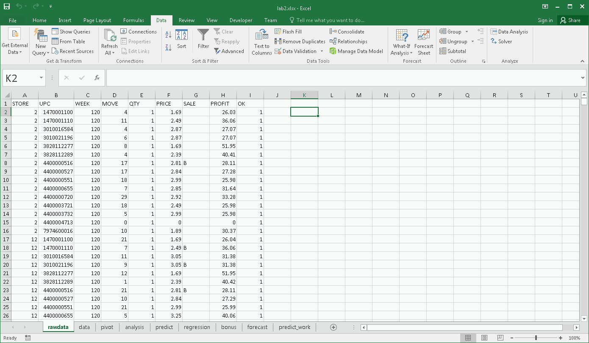
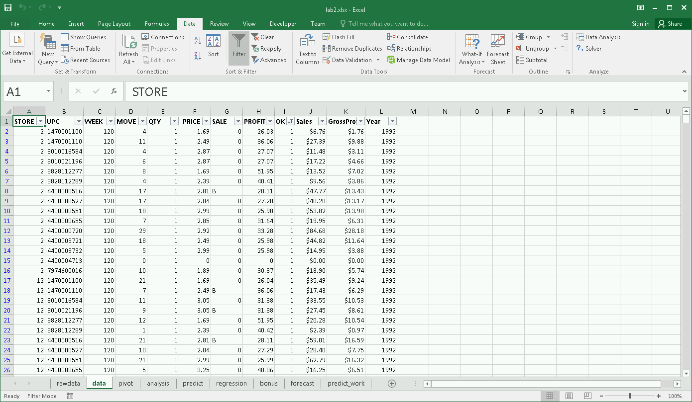
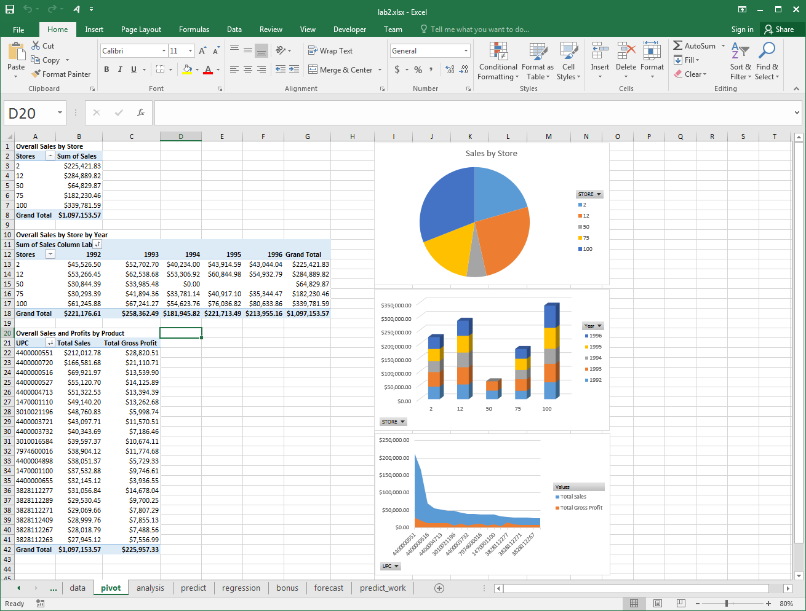
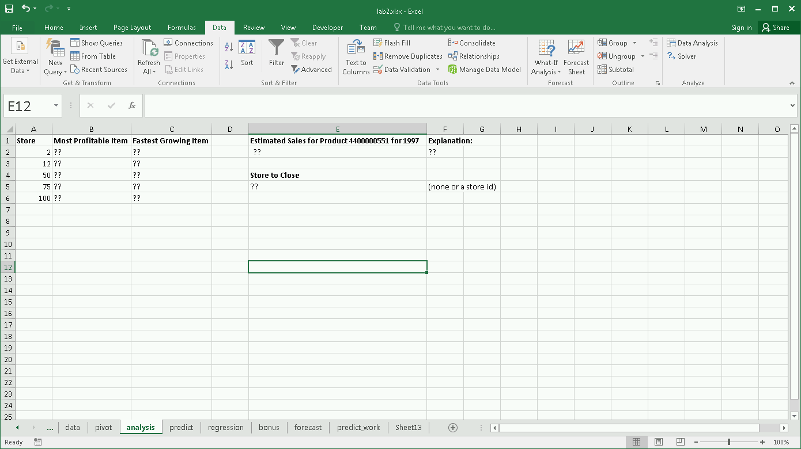
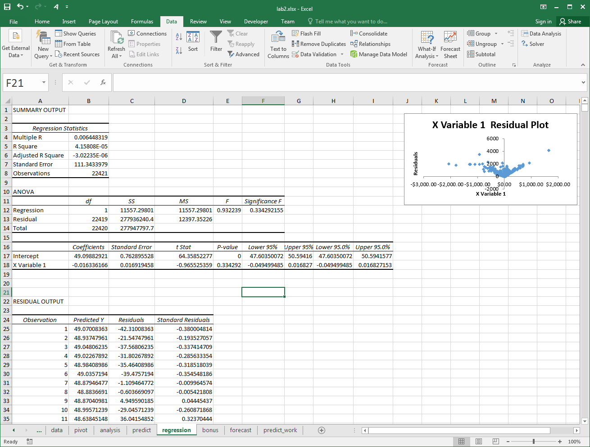

DATA 301 - Introduction to Data Analytics
Lab 2: Excel - Pivot Tables and What-If Scenarios
In this lab, we will use Microsoft Excel to perform analysis of business data including reporting and predictions.
Objectives
- Manipulate sales data commonly seen in business applications.
- Create several pivot tables and pivot charts.
- Develop what-if scenarios to make it easy to communicate possibilities.
- Use goal seek and linear programming to determine sales targets.
- Experiment with analysis toolpak.
Analysis Problem and Goals
This scenario involves analyzing real-world, historical business sales data. This data set was collected by the University of Chicago from 1989 to 1997 for the company Dominick's Finer Foods. From this large data set, we are going to perform an analysis on the store-level sales data which contains data for each UPC sold at every store on a weekly basis. The format of the data is below and a detailed description is available.
| Variable | Description | Type | Length |
| upc | UPC Number | Numeric | 8 |
| store | Store Number | Numeric | 3 |
| week | Week Number | Numeric | 3 |
| move | Number of unit sold | Numeric | 8 |
| price | Retail Price | Numeric | 8 |
| qty | Number of item bundled together | Numeric | 3 |
| profit | Gross margin | Numeric | 8 |
| sale | Sale code (B, C, S) | Character | 8 |
| ok | 1 for valid date, 0 for trash | Numeric | 3 |
Note: To calculate the gross sales, use price * move / qty. To calculate the gross profit, multiple sales by profit/100.
Click here to download the data set that consists of the sales for the top 20 products from the Cookie category for 5 stores from 1992 to 1996.
Goals
The analysis goals are:
- Loading - load the input CSV file into Excel and convert into an Excel spreadsheet file.
- Cleaning - filter out all data indicated as "trash" (value 0) in ok field
- Summary - create pivot tables for:
- Overall sales by store
- Annual sales by store
- Sales and profit by UPC
- Visualization - create charts to display data:
- Create a chart for each pivot table.
- Create a chart for product 4400000551 showing sales by year. Note: This chart may be used to help predict sales in 1997 but is not part of the marked deliverables.
- Analysis - using the sales data answer these analysis questions:
- What is the most profitable item at each store?
- For product 4400000551, determine the estimated sales for the next year (1997).
- Use What-if scenarios to show annual sales per store in 1997 if -10% decrease, stays the same, and 10% increase.
- Use regression to determine if any relationship between Sales and GrossProfit.
- Use goal seek to determine the percentage sales change needed to reach $250,000 in overall sales in 1997.
Marking and Evaluation
Marks are awarded by precisely following these requirements:
- Loading (1 mark) - submit an Excel file called lab2_(yourstudentnum).xlsx (e.g. lab2_11111111.xlsx) where the first sheet is called rawdata and contains the loaded data set with no changes.
- Cleaning and Formatting (3 marks) - create a second sheet called data that contains the data set after the following formatting and cleaning:
- Header fields must be in bold font. UPC field must display entire value (make sure column width is wide enough). (0.5 marks)
- Add a column called Sales which is calculated as: price * move / qty. Add a column called GrossProfit which is calculated as: Sales * Profit/100. Both columns must be formatted as Currency. (0.5 marks)
- Add a column called Year that calculates the year for each week. (1 mark)
- 1992 - Weeks 120 to 172
- 1993 - Weeks 173 to 225
- 1994 - Weeks 226 to 277
- 1995 - Weeks 278 to 329
- 1996 - Weeks 330 to 381
- The data must be sorted by OK (descending), week (ascending), then store (ascending), then UPC (ascending). (0.5 marks)
- Filter data so only values of OK=1 appear (no trash data). (0.5 marks)
- Summary Analysis and Visualization (3 marks) - create a third sheet called pivot that contains:
- A pivot table for overall sales by stores with a pie chart. (1 mark)
- A pivot table for overall sales by stores by year with a stacked column chart. (1 mark)
- A pivot table for overall sales and profits by UPC with an area chart. Sort by total sales descending.(1 mark)
- Analysis (4 marks) - create a fourth sheet called analysis that contains:
- A table with columns Store, Most Profitable Item, and Fastest Growing Item where each row gives a store id and its most profitable (GrossProfit for all years) and fastest growing item by Sales (% increase from 1995 to 1996). (2 marks)
- In cell E2, estimate the total sales in 1997 for product 4400000551 and give a short reasion in cell F2 for your estimate. (1 mark)
- In cell E5, put the store id of any store that you would suggest to close or none if no store closures. (1 mark)
- Note: None of these values in the analysis tab need to be calculated with formulas. You must just figure out the right answer and type it in as a value in the cell.
- Predictions (3 marks) - create a fifth sheet called predict that contains:
- Sales data for 1996 and a column for predicted sales for 1997. The predicted sales will be a percentage change from 1996. This percentage will be in cell H3. Use what-if scenarios to create three scenarios: 1) Good (+10%), 2) Same (0%), and 3) Bad (-10%). (2 marks)
- Use goal seek to determine the % sales change necessary so total 1997 sales is $250,000. Put that value in cell H6. (1 mark)
- Regression (1 marks) - compute a regression on sales (Y variable) and GrossProfit (X variable) and rename the regression result sheet as regression. The regression shown uses only records with OK=1.
- Bonus (2 marks) - create a new sheet called bonus that performs some analysis to determine any useful insight from the data with an explanation on what you did and why it is interesting.
- Note: You may have additional working sheets in your spreadsheet. (The screenshots show predict_work and forecast which you do not have to make).
When complete, submit your Excel file named lab2_(yourstudentnum).xlsx (e.g. lab2_11111111.xlsx) using Connect.
Screenshots
rawdata sheet

data sheet

pivot sheet

analysis sheet

predict sheet

regression sheet

 Home
Home